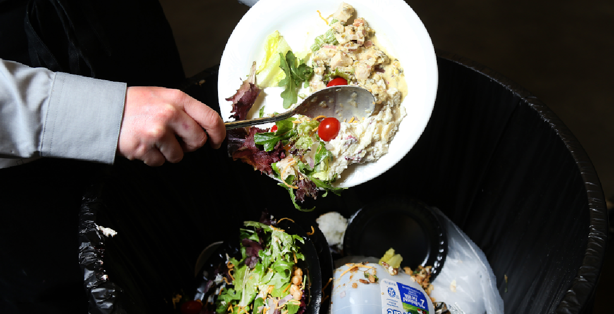

Food Waste
How much food are we wasting?


Addison, Jessica, and Ivan
Our objective mainly today is to create awareness to an issue that does not make the headlines as much as it should be. Our project was to implement data analysis using tableau, python, and machine learning to showcase our data and to ultimately show why this is an issue that must be discussed more often. Throughout our project we will show you what the problem is, what we are doing, and what you can do to help our planet in regards to food waste and food loss. We hope you stick around, enjoy, and are able to take something home from our presentation!
Addison helped with creating many of the lovely visualizations you see on this presentation. Addison worked on the Tableau, Pandas, and Python portion. She also cleaned and joined the data to help create those graphs and maps you see! Finally, she put together that awesome trifold we are using in our presentation! You can find out more about Addison on Github and LinkedIn just by clicking the links below!
Jessica was so determined to make the machine learning portion of the project work! With her positivity and willingness, she was able to create a model to show the trends between 2010 and 2013. It was definitely tough but we are proud of the result! Oh yeah! You see that awesome logo on the top left hand corner of the page? Yup Jessica made it isn't it awesome? You can find out more about Jessica on Github and LinkedIn just by clicking the links below!
Ivan created the website that you are currently feasting your eyes on with HTML5, CSS, and just a sprinkle of JavaScript. He was able to accomplish this by staying up until 4am while all his friends were out partying. Ivan also did a Google API call to construct the food bank map that you see on the "What can you do?" page not only that but had to stay up countless nights to input the geolocation info of each food bank in the U.S. You're welcome! You can find out more about Ivan on Github and LinkedIn just by clicking the links below!